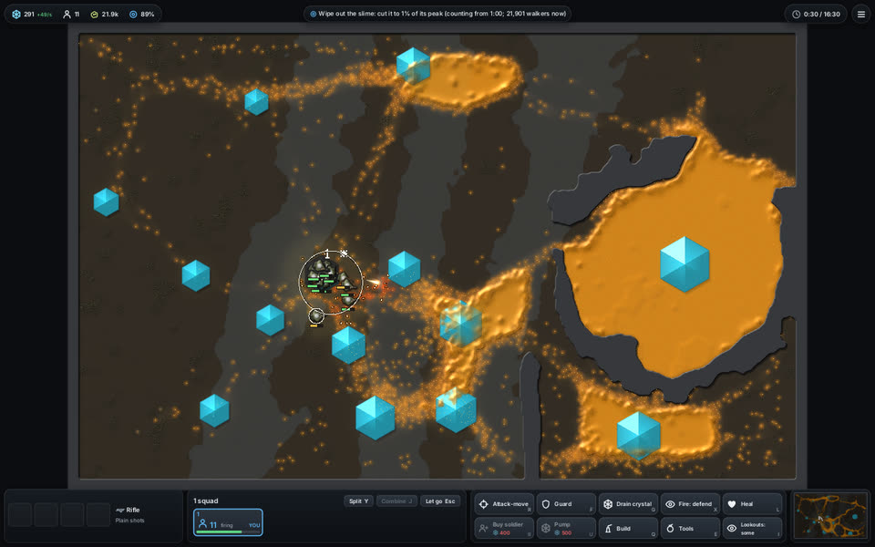
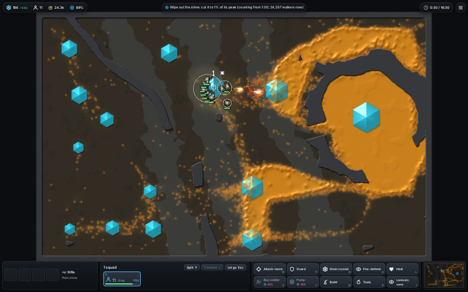
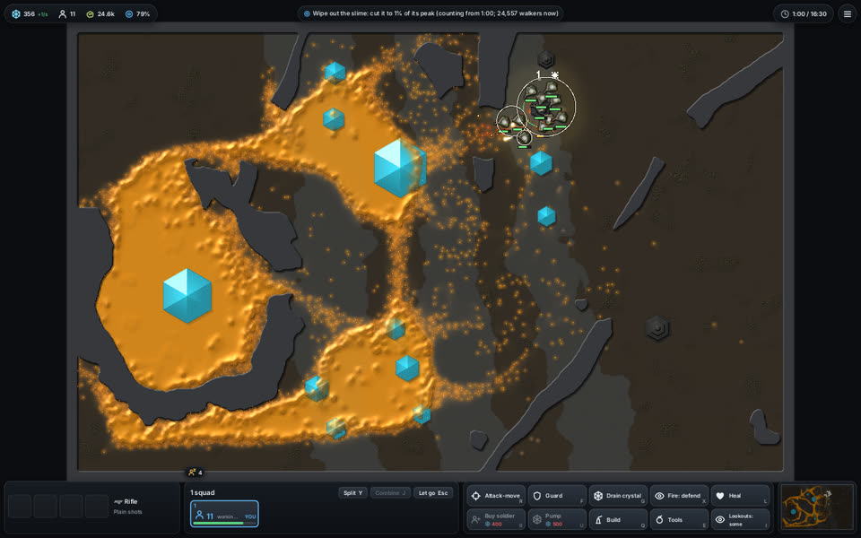

<title>Planet 2 Landing</title>
<meta name="claude:viewport-fit-sides" content="cover">
<link rel="stylesheet" href="https://fonts.googleapis.com/css2?family=Inter:wght@400;500;600&family=Space+Grotesk:wght@500;600&display=swap">
<style>
/* One reading column. Each film or still sits beside the counts read off
   the same game, so no picture stands without its numbers. */
:root {
  --bg: #f3f4f1;
  --panel: #ffffff;
  --ink: #1b2023;
  --muted: #58626a;
  --rule: #d4d8d6;
  --amber: #a85a12;
  --amber-soft: #f4e3cf;
  --good: #2f6b4f;
  --good-soft: #dcebe2;
  --bad: #8c3b2e;
  --bad-soft: #f2dcd6;
  --display: "Space Grotesk", "Segoe UI", system-ui, sans-serif;
  --body: Inter, "Segoe UI", system-ui, sans-serif;
}
@media (prefers-color-scheme: dark) {
  :root:not([data-theme="light"]) {
    --bg: #14181b; --panel: #1c2226; --ink: #e7eae8; --muted: #9aa5ab; --rule: #313a40;
    --amber: #e8a04d; --amber-soft: #3a2b1a; --good: #7fc3a0; --good-soft: #1d3329;
    --bad: #e59a8b; --bad-soft: #3a221d;
    color-scheme: dark;
  }
}
:root[data-theme="dark"] {
  --bg: #14181b; --panel: #1c2226; --ink: #e7eae8; --muted: #9aa5ab; --rule: #313a40;
  --amber: #e8a04d; --amber-soft: #3a2b1a; --good: #7fc3a0; --good-soft: #1d3329;
  --bad: #e59a8b; --bad-soft: #3a221d;
  color-scheme: dark;
}
body {
  background: var(--bg); color: var(--ink);
  font: 400 16px/1.55 var(--body);
  padding-block: 40px 72px;
  padding-left: max(16px, env(safe-area-inset-left, 0px));
  padding-right: max(16px, env(safe-area-inset-right, 0px));
}
main { max-width: 1040px; margin: 0 auto; display: flex; flex-direction: column; gap: 56px; }
header { display: flex; flex-direction: column; gap: 14px; }
h1 { font: 600 2.1rem/1.15 var(--display); margin: 0; text-wrap: balance; letter-spacing: -0.01em; }
h2 { font: 600 1.4rem/1.25 var(--display); margin: 0; text-wrap: balance; }
h3 { font: 600 0.82rem/1.3 var(--body); margin: 0; text-transform: uppercase; letter-spacing: 0.07em; color: var(--muted); }
p { margin: 0; max-width: 68ch; }
.lede { font-size: 1.1rem; }
.meta { color: var(--muted); font-size: 0.9rem; }
section { display: flex; flex-direction: column; gap: 20px; }
.pair { display: grid; grid-template-columns: repeat(2, minmax(0, 1fr)); gap: 20px; }
.three { display: grid; grid-template-columns: repeat(3, minmax(0, 1fr)); gap: 16px; }
@media (max-width: 760px) { .pair, .three { grid-template-columns: minmax(0, 1fr); } }
figure { margin: 0; display: flex; flex-direction: column; gap: 10px; min-width: 0; }
figure video, figure img { width: 100%; height: auto; display: block; border-radius: 4px; background: #0d1012; }
figcaption { font-size: 0.9rem; color: var(--muted); }
figcaption b { color: var(--ink); font-weight: 600; }
.scroll { overflow-x: auto; }
table { border-collapse: collapse; width: 100%; font-size: 0.9rem; font-variant-numeric: tabular-nums; }
th, td { text-align: right; padding: 6px 10px; border-bottom: 1px solid var(--rule); white-space: nowrap; }
th:first-child, td:first-child { text-align: left; }
thead th { font-weight: 600; color: var(--muted); font-size: 0.8rem; border-bottom-color: var(--muted); }
td.up { background: var(--good-soft); color: var(--good); font-weight: 600; }
td.down { background: var(--bad-soft); color: var(--bad); }
td.sub { color: var(--muted); font-size: 0.8rem; }
code { font: 0.86em ui-monospace, "SF Mono", Menlo, Consolas, monospace; }
.answer { border-left: 3px solid var(--amber); padding-left: 16px; display: flex; flex-direction: column; gap: 10px; }
ul { margin: 0; padding-left: 20px; display: flex; flex-direction: column; gap: 6px; max-width: 70ch; }
</style>

<main>
<header>
  <h1>Planet 2: the bot or the planet?</h1>
  <p class="lede">Mostly the planet. On three run seeds of four the squad lands by small crystals while a slime of 23,000 to 25,000 walkers holds every big one and bites the squad wherever it stands. Better play helps a little; a smaller slime turns it round.</p>
  <p class="meta">2026-11-18, the Enemy lane, for Direction. The run bot landing straight on planet 2 of run seeds 1 to 4 with 9 soldiers and nothing bought, on the software GPU, one film each, to 3:00. Planet 1 of run seed 1 lands on 13,119 walkers for comparison.</p>
</header>

<section>
  <h2>The same bot, two landings</h2>
  <div class="pair">
    <figure>
      <video src="seed1-worn-down.mp4" controls muted loop playsinline preload="metadata"></video>
      <figcaption><b>Run seed 1, worn down.</b> 0:02 to 2:30, 20 times real speed. It lands on a crystal of 72,000 charge beside the slime's arm, is bitten from 0:10 and drains it by 0:40 for 1,130 food. The four big crystals sit in the slime. From 1:00 it is under half health, so it steps back whenever it is bitten, and it is bitten everywhere: 210 food from 1:00 to 2:30. A raid of 4,135 walkers at 0:59 and a 405-walker hunter at 1:18.</figcaption>
    </figure>
    <figure>
      <video src="seed2-builds-up.mp4" controls muted loop playsinline preload="metadata"></video>
      <figcaption><b>Run seed 2, builds up.</b> The same span. It lands by a crystal of 365,000 charge in a corner the slime does not hold. The threads come all the same, but the squad drains 110 food a second at 1:00 and the volley keeps them off: 30 soldiers and the slime from 22,969 to 14,664 by 2:30.</figcaption>
    </figure>
  </div>
  <div class="scroll">
    <table>
      <thead><tr><th>Time</th><th>Seed 1 soldiers</th><th>health</th><th>food</th><th>slime</th><th>Seed 2 soldiers</th><th>health</th><th>food</th><th>slime</th></tr></thead>
      <tbody>
        <tr><td>0:30</td><td>11</td><td>0.71</td><td>1,083</td><td>21,879</td><td>12</td><td>0.95</td><td>1,112</td><td>22,655</td></tr>
        <tr><td>1:00</td><td>11</td><td>0.35</td><td>1,130</td><td>20,717</td><td>19</td><td>0.93</td><td>3,364</td><td>20,802</td></tr>
        <tr><td>1:30</td><td>10</td><td>0.40</td><td>1,202</td><td>22,098</td><td>25</td><td>0.90</td><td>5,701</td><td>16,930</td></tr>
        <tr><td>2:00</td><td>6</td><td>0.36</td><td>1,298</td><td>21,698</td><td>26</td><td>0.87</td><td>5,948</td><td>15,714</td></tr>
        <tr><td>2:30</td><td>3</td><td>0.22</td><td>1,340</td><td>24,247</td><td>30</td><td>0.79</td><td>7,356</td><td>14,664</td></tr>
      </tbody>
    </table>
  </div>
  <p class="meta">Health is the squad's mean, 1 full. Food is harvested in all; a soldier costs 400. Seed 2's loss later is the bot's known endgame: by 3:00 it has 30 soldiers and the slime is 10,877, but the home holds over 200 walkers a soldier and nothing is left to drain (Engine and tools' handoff).</p>
</section>

<section>
  <h2>Where the losing seeds land</h2>
  <div class="three">
    <figure>
      
      <figcaption><b>Seed 1, 0:30.</b> Free crystals 20,000 to 72,000; the four of 133,000 to 240,000 in the slime.</figcaption>
    </figure>
    <figure>
      
      <figcaption><b>Seed 3, 0:30.</b> Landed on 120,000 beside the arm holding 209,000; dry by 0:50 for 1,875 food.</figcaption>
    </figure>
    <figure>
      
      <figcaption><b>Seed 4, 1:00.</b> Small crystals by the landing; the one big crystal, 360,000, inside a lobe of the slime.</figcaption>
    </figure>
  </div>
</section>

<section>
  <h2>What helps on those three seeds</h2>
  <p>Soldiers alive at 2:30, with the squad's health. Four changes, one at a time, each against the run bot as it is.</p>
  <div class="scroll">
    <table>
      <thead><tr><th>Seed</th><th>The run bot</th><th>Backs off farther</th><th>Sprawler's smell off</th><th>Slime ×0.8</th><th>Slime ×0.6</th></tr></thead>
      <tbody>
        <tr><td>1</td><td class="down">3 · 0.22</td><td>9 · 0.42</td><td class="down">1 · 0.06</td><td>14 · 0.59</td><td class="up">24 · 0.74</td></tr>
        <tr><td>3</td><td class="down">9 · 0.46</td><td>16 · 0.48</td><td>14 · 0.52</td><td>10 · 0.41</td><td class="up">18 · 0.55</td></tr>
        <tr><td>4</td><td class="down">4 · 0.26</td><td class="down">4 · 0.26</td><td>11 · 0.45</td><td>10 · 0.15</td><td class="up">22 · 0.55</td></tr>
        <tr><td>2</td><td class="up">30 · 0.79</td><td></td><td></td><td></td><td class="up">28 · 0.78</td></tr>
        <tr><td class="sub">Slime at landing</td><td class="sub">23,076 · 25,448 · 23,010</td><td class="sub">same</td><td class="sub">same</td><td class="sub">18,461 · 20,358 · 18,409</td><td class="sub">13,845 · 15,269 · 13,806</td></tr>
      </tbody>
    </table>
  </div>
  <ul>
    <li><b>Backs off farther</b>: the bot looks for a crystal quiet over twice its gun's range and walks three ranges for it, so it leaves the slime's side before it builds. More soldiers on 2 of 3 seeds; on seed 4 no crystal was quiet either way, so it played the same game. A local change to the bot, not committed.</li>
    <li><b>Sprawler's smell off</b>: its smell for soldiers turned down to the plain slime's (<code>set=smell=0.5 set=smell_r=2</code>). More soldiers on 2 of 3 seeds, fewer on seed 1. Its trait is not what does it.</li>
    <li><b>Smaller slime</b>: the planet's walkers times 0.8 or 0.6, start and room alike, as a smaller size roll gives. At 0.6 the bot builds on every seed tried and seed 2 is about as before. A local change, not committed.</li>
  </ul>
</section>

<section class="answer">
  <h2>For Direction</h2>
  <p>The size is the lever. At 0.6 of today's planet 2 slime, about planet 1's 13,000 walkers against 23,000 to 25,000, the run bot builds 18 to 24 soldiers by 2:30 on the three seeds where it now falls to 3 to 9. At 0.8 only seed 1 holds. The easy landing, seed 2, hardly moves.</p>
  <p class="meta">Not checked: whether the bot then wins (the films stop at 3:00; winning is exit test 1's 8 to 12 minutes), the run as played (the bot reaches planet 2 with Tinder and the shop's levels), other seeds and sizes, and the owner's own play.</p>
</section>
</main>
